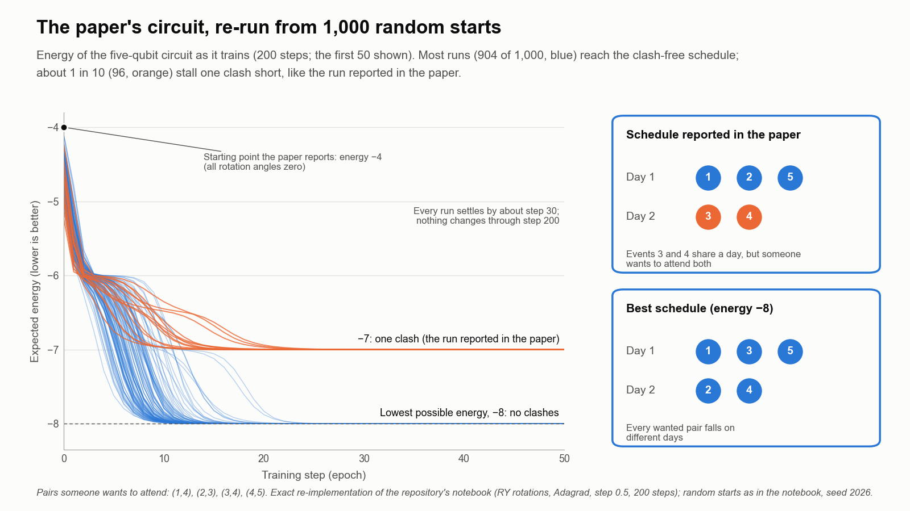

Quantum Optimization
Exploring how planning problems can be rewritten so quantum computers can work on them, starting with a small scheduling example.
- Active
- 2025–present
- Quantum computing
- Optimization
- Operations research
![Four-step schematic. 1, Problem: five numbered events drawn as circles, with lines joining the pairs someone wants to attend (1 and 4, 2 and 3, 4 and 5, 3 and 4). 2, QUBO matrix: a five-by-five grid with dark cells at those pairs and light cells on the diagonal, labelled 'pattern only'. 3, Quantum circuit: five qubit lines, each starting in state zero, passing through a tunable rotation gate RY(theta) and a measurement, with a loop arrow showing a classical optimizer adjusting the angles. 4, Schedule: an example readout of five bits, 0 1 0 1 0, mapped to Day 1 (events 1, 3, 5) and Day 2 (events 2, 4).](img/hero.png)
In plain English
Many planning decisions, such as where to put facilities, how to route vehicles or how to schedule events, come down to large sets of yes-or-no choices. The number of possible answers doubles with every choice added, which is why such problems get hard quickly. Quantum computers may one day search these spaces in a different way, but only once a problem has been rewritten in a form they accept.
This project explores that translation for operations research problems. The lab's first paper, presented at the 2026 IISE Annual Conference, walks through the whole recipe on a small event-scheduling example: a yes-or-no model; a QUBO (quadratic unconstrained binary optimization) form that folds every rule into penalties; an Ising energy function that a set of qubits can represent; and a tunable quantum circuit trained on a simulator. The aim is a clear, reusable method rather than a claim of speed, and the work is at an early stage.
Main points
- Sets out a step-by-step recipe for turning a classical yes-or-no model into a form a quantum computer can work on.
- Implements the recipe in a Python notebook on a noiseless simulator; no quantum hardware was used.
- Names the hurdles to scaling up: qubit counts, circuits that stop learning, hardware noise and penalty tuning.
- The lab's facility location and supply-chain models are natural next test cases for the method.
Papers
Turning a scheduling puzzle into a quantum circuit, step by step
Alavi, S., Aghapour, R., & Jones, E.C., Jr. (2026). A quantum computing approach to combinatorial optimization: QUBO formulation and implementation. Proceedings of the IISE Annual Conference & Expo 2026.
A worked example shows how to rewrite a small event-scheduling problem so a simulated quantum computer can search for the best schedule.
- The paper sets out a four-step recipe: write a classical yes-or-no model, fold its rules into a QUBO with penalty terms, convert the QUBO into an Ising Hamiltonian, and minimize that energy with a variational quantum circuit tuned by a classical optimizer.
- In the implemented example, each of five qubits stands for one event, and the energy has one two-qubit term for each of the four pairs of events that someone wants to attend.
- On a noiseless simulator, a single layer of one-qubit rotations trained for 200 steps settled on a schedule with events 1, 2 and 5 on one day and events 3 and 4 on the other.
- The authors name the hurdles to scaling up: the number of qubits grows with events times days, deep circuits can stop learning (barren plateaus), real hardware adds noise, and penalty weights need re-tuning as problems grow.
Correction note. The schedule reported in the paper puts events 3 and 4, a pair someone wants to attend, on the same day, so it is not the best schedule for the example. Re-running the paper's circuit 1,000 times from random starts, the SEAR Lab found a schedule with no clash in 904 runs. The method in the paper stands; the reported run stopped at a weaker answer.

People
- Erick C. Jones Jr., PhD, PEPrincipal Investigator · SEAR Lab directorin
- Sarasadat AlaviAuthor, Proceedings of the IISE Annual Conference & Expo 2026 2026
- Raziye AghapourAuthor, Proceedings of the IISE Annual Conference & Expo 2026 2026in
Current team: names to be added from the lab personnel sheet. Profiles marked in link to LinkedIn. More past and present lab members are on the SEAR Lab team page.